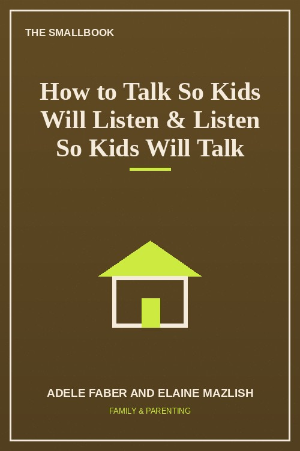

Library › Family & Parenting
How to Talk So Kids Will Listen & Listen So Kids Will Talk - Summary & Key Lessons

The parenting classic that treats children like people and feelings like facts.
📖 OPEN THE FULL INTERACTIVE BREAKDOWN →🌐 Read it in Hindi, Hinglish, Gujarati, Tamil & 22 more languages, with audio.
💡 The Big Idea
Adele Faber and Elaine Mazlish, students of psychologist Haim Ginott, turned his communication method into the most practical parenting book ever written. Its skills are simple and hard: acknowledge feelings instead of denying them, describe problems instead of attacking character, offer choices instead of orders, and solve problems together instead of punishing. Exercises, comics and parent testimonials show each skill failing the old way and working the new way.
🧠 The 8 Key Lessons
Lesson 1: Acknowledge the Feeling Before Touching the Problem
Helping Children Deal With Their Feelings
The foundation skill: when a child says I hate the baby, the instinct is correction (you don't mean that), and the result is escalation, because the child now has to prove the feeling. Adele Faber and Elaine Mazlish teach the alternative: name it. You sound furious at your brother right now. A feeling named loses its need to shout. Their workshops found that children whose feelings are accepted become more able to accept limits on behaviour, because the limit no longer requires surrendering their inner life.
📖 Example: A boy screams that his teacher is stupid for assigning homework. Denial buys a meltdown about fairness; naming it, you are really annoyed, it looks endless tonight, buys a sigh and, usually, the homework. The feeling was the locked door; acknowledgement is the key that was always in the parent's pocket. Read the full example →
⚡ Do this: For one day, respond to every complaint from your child by naming the feeling first, one sentence, before any advice or limit.
Lesson 2: Describe, Don't Attack
Engaging Cooperation
Orders and character attacks (you never listen, how many times) trigger defence, while description recruits help: the milk is still on the table, I need it in the fridge. Adele Faber and Elaine Mazlish offer a toolkit for cooperation without nagging: describe what you see, give information, say it in one word, write a note, describe what you feel, without naming who is bad. Children, they found, cooperate like adults when addressed like adults: with facts, respect and a clear next step.
📖 Example: A note on the bathroom mirror, wet towels make mildew sad, works on a teenager who has tuned out four years of speeches. The humour and brevity succeed where volume failed, because the message finally contained information instead of indictment. Read the full example →
⚡ Do this: Convert your three most repeated complaints into descriptions, one-word prompts or notes this week. Retire the speeches.
Lesson 3: Alternatives to Punishment
Alternatives to Punishment
Punishment, the book argues, teaches resentment and evasion, not responsibility, because the punished child thinks about the parent's unfairness instead of their own deed. Alternatives: express your feelings strongly without attacking, state expectations, show how to make amends, offer choices, take action, and problem-solve together. The point is never permissiveness; limits stay firm. What changes is the child's internal monologue, from revenge to repair.
📖 Example: A girl who broke a neighbour's window spends her Saturday earning the repair money and writing the apology with her father's help, angry for an hour and responsible by dinner. The same girl sent to her room spends the hour designing alibis. Both children are disciplined; only one is educated. Read the full example →
⚡ Do this: Take one recurring offence and design the amends instead of the penalty: repair, restitution, practice. Involve the child in choosing.
Lesson 4: Give Information Instead of Orders
Engaging Cooperation
Children tune out commands but absorb information, because information respects their competence: the paint is open, it spills decides more behaviour than a rule about care. Adele Faber and Elaine Mazlish catalogue the shift across dozens of family scenes: information, one word prompts, notes, and descriptions of consequences all engage the child's own executive function, which is the actual developmental goal. Orders produce compliance theatre; information produces a child practising judgement.
📖 Example: A father stops announcing bedtime and instead tells his son the plan once, then asks the boy to tell him what happens at seven thirty. The son, now the narrator of the routine, polices himself. The father's voice is retired from a job information does better. Read the full example →
⚡ Do this: Take your five most repeated orders and translate each into information plus a question. Use the translations for a week.
Lesson 5: Fantasy Can Grant What Reality Cannot
Helping Children Deal With Feelings
One of the book's most beloved techniques: give in fantasy what you cannot give in reality. I wish we could have a dinosaur; how big would ours be disarms a demand better than three explanations of extinction or budget. The child hears that their wanting is understood and even shared, and the wanting, honoured, often dissolves on its own. Parents report the technique feels like cheating, until they see it is really the feeling being fed while the object stays refused.
📖 Example: A mother whose daughter demands a second ice cream wishes aloud for a cone the size of the car. They design it together, laughing, and the actual cone is never mentioned again. The boundary held perfectly; the war never reported for duty. Read the full example →
⚡ Do this: Try one fantasy grant this week instead of a refusal speech. Build the impossible thing together in detail.
Lesson 6: Write It Down: Notes Work Where Voices Fail
Engaging Cooperation and Problem Solving
The written note recurs through the book's success stories because writing escapes the tone wars: paper cannot nag, sigh or use the voice from 2019. Notes state facts, add humour, and let the child read at their own pace without an audience for their reaction. Adele Faber and Elaine Mazlish suggest notes for everything from wet towels to sibling treaties, and parents keep writing in with the same report: the note worked the first day.
📖 Example: Two brothers share a treaty drafted at a family meeting, taped inside a cupboard: borrowed toys return by dinner, knocking is law. The parents' voices had failed on both counts for a year. The treaty, consulted like scripture, ended the war in a week. Read the full example →
⚡ Do this: Replace your most-ignored instruction with a written note this week. Keep it under twenty words and add one drop of humour.
Lesson 7: Problem-Solving Together Is the Advanced Course
Problem Solving
For chronic issues the book teaches a five step family method: hear the child's feelings and needs, state yours, brainstorm without judging, write everything down, then choose together what to try. Children who help design solutions enforce them on themselves and their siblings with a zeal no parent can buy. The skill being taught is not obedience but negotiation, which is the adult world's actual operating system.
📖 Example: A family drowning in morning chaos brainstorms thirty ideas, including a helicopter, before choosing three mundane ones: clothes chosen at night, one alarm song, breakfast jobs rotated. Mornings improve within days, and the children guard the system because it is theirs. Read the full example →
⚡ Do this: Run one five step problem-solving session on your family's worst recurring friction this weekend. Write every idea down.
Lesson 8: Putting It All Together: The Parent Is the Lesson
Putting It All Together
The book closes where all its techniques converge: children absorb the parent's way of treating people long after specific scripts are forgotten. Faber and Mazlish's deepest claim is that respectful communication is not a trick for compliance but a rehearsal for the child's future relationships, including the one they will have with you at forty. Deepening means auditing your tone as curriculum: every exchange teaches what power sounds like, what apology sounds like, and whether feelings are information or crimes in this house.
📖 Example: Their follow up letters from parents who took the workshops describe the eerie moment a child deploys the technique on the parent, feelings acknowledged, problem described without blame, and the adult realises the student has become the mirror. The workshops count that moment, not obedience statistics, as their graduation certificate. Read the full example →
⚡ Do this: Audit one day of your tone as if your child will use it on you in thirty years. Keep what you would be glad to hear back; repair one sentence pattern tomorrow.
✅ 5-Step Action Plan
- Name the feeling first for one full day before limits or advice.
- Replace three speeches with description, one word or a note.
- Design amends for one recurring offence; involve the child.
- Offer two acceptable choices where you usually issue orders.
- Run one family problem-solving meeting, feelings agenda first.
- When furious, describe what you feel without naming who is bad.
- Re-read one chapter monthly; these are skills, not facts.
⚠️ When This Doesn't Work
The method assumes a basically safe home and typically developing children; families dealing with trauma, neurodivergence or danger need it adapted with professional guidance, not applied by the book.
💀 The Graveyard Proves It
💬 Best Quotes from How to Talk So Kids Will Listen & Listen So Kids Will Talk
- “The language of empathy does not come naturally to us. It's not part of our mother tongue.”
- “Children behave better when they feel better.”
- “Punishment leads to resentment, revenge fantasies, and self-pity, not to responsibility.”
Interactive version: mark lessons as read, listen in your language, share quote cards.